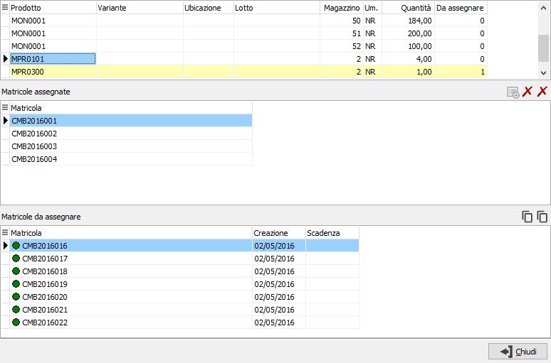
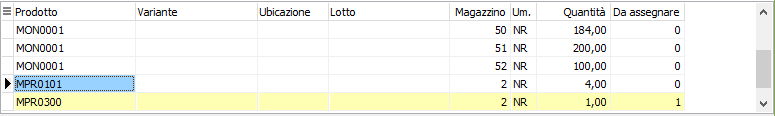
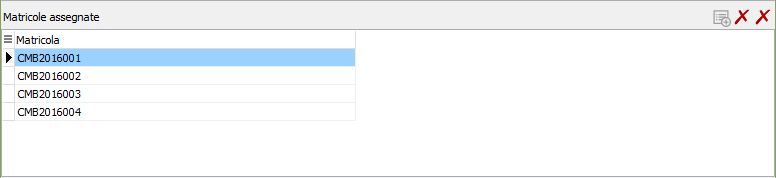
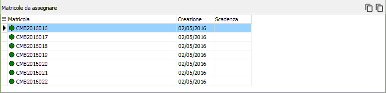
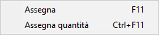

Gestione matricole massiva
 Nelle gestioni documenti/movimenti,
in inserimento/variazione, ed in alcune procedure di elaborazione è presente
il pulsante Matricole, tramite cui è possibile assegnare le matricole
a tutte le righe/dettagli presenti sul documento/movimento evitando di
dover accedere per singolo rigo/dettaglio; saranno elaborati i singoli
prodotti che gestiscono le matricole se la data del documento non è antecedente
alla data di inizio gestione specificata in configurazione; laddove è
presente il tipo rigo, è necessario che siano gestiti il prodotto e la
quantità, che la classe del rigo non sia di tipo annotazione e che non
si tratti di un rigo di tipo recupero spese. Se il prodotto gestisce un
dettaglio (variante, ubicazione o lotto) questi saranno visualizzati in
maniera analitica nella finestra.
Nelle gestioni documenti/movimenti,
in inserimento/variazione, ed in alcune procedure di elaborazione è presente
il pulsante Matricole, tramite cui è possibile assegnare le matricole
a tutte le righe/dettagli presenti sul documento/movimento evitando di
dover accedere per singolo rigo/dettaglio; saranno elaborati i singoli
prodotti che gestiscono le matricole se la data del documento non è antecedente
alla data di inizio gestione specificata in configurazione; laddove è
presente il tipo rigo, è necessario che siano gestiti il prodotto e la
quantità, che la classe del rigo non sia di tipo annotazione e che non
si tratti di un rigo di tipo recupero spese. Se il prodotto gestisce un
dettaglio (variante, ubicazione o lotto) questi saranno visualizzati in
maniera analitica nella finestra.

La finestra presenta tre griglie: in alto le righe relative ai prodotti
presenti sul documento/movimento già esplose negli eventuali dettagli
presenti, le righe vengono visualizzate con sfondo in colore differente
in base al numero di matricole assegnate e da assegnare.

Per ogni rigo la griglia di mezzo riporta le matricole già assegnate,
con il doppio click del mouse sulla riga si accede alla manutenzione
della matricola.

Per ogni rigo la griglia in basso riporta le matricole da assegnare,
queste ultime proposte secondo lo schema previsto per l’assegnazione
da singolo rigo.


I pulsanti e le funzionalità presenti
sono le stesse presenti nella finestra di assegnazione
di rigo fatta eccezione per i filtri di selezione e l’inserimento
con barcode; nella griglia in basso per la selezione è disponibile anche
il menù richiamabile con il tasto destro del mouse e relativi tasti funzione
per la selezione delle matricole.
Sarà possibile uscire dalla finestra anche se tutte le righe non risultano
coperte da codici matricole assegnate o senza nessuna assegnazione; comunque
viene mandato un messaggio per le righe che non risultano coperte.